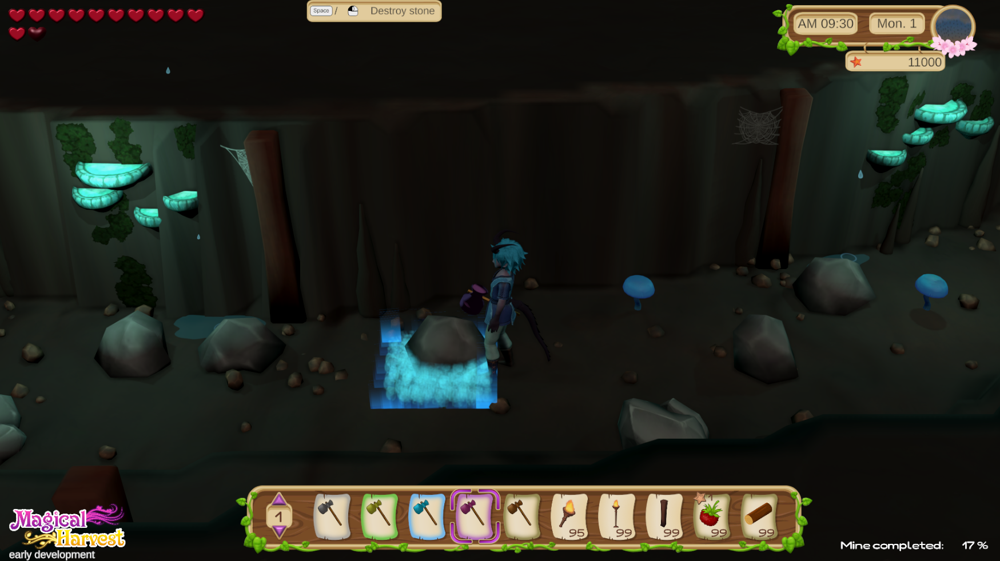
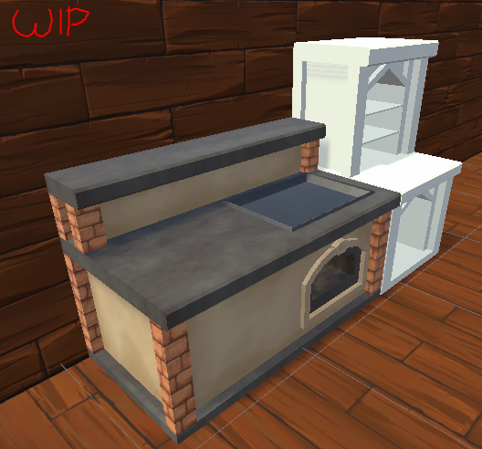

August 01, 2022 - Forest and flowers! A lot of flowers!
 Hello Farmer!
Hello Farmer!
Again 15 days have passed and again a lot has been added to Magical Harvest! The game now has all the world areas that can be
discovered in the demo version (however, this is also only a small part compared to the later game - in addition, the maps are
adapted for the demo version and will not be in the form they are now in the game later.
What was done:
- Save system: The game can now be saved and loaded in (for now) 3 available save slots. Saving is done when you finish a day.
- The fishing minigame has been changed a bit
- The forest section was created that separates the farm from the mine and provides access to the sea
- All 6 types of flowers can now be dyed into 9 different colors on a dyeing table. This makes 54 different colored flowers on the farm!
- First collectible items for the forest were added and a random system was created that makes them spawn/grow randomly every day.
- Decoration items for the forest were created (ferns, forest anemones, flowers, mine entrance).
- Visual improvements: Glitter effect of collectible objects, magic icons.
 What's next?
What's next? Planning until August 15:
With all of the game areas important to the demo now implemented, only the tutorial remains as the main focus.
This includes implementing:
- Dialog system
- Quest system
- Tutorial quests in combination with dialogs
- Introductory story for the demo
 Actually, it was announced that we will release the demo during the Steam Next festival in October.
This will not be the case - you will still get the demo in October! What we didn't know before is that
you can only participate in the Steam-Next-Festival once and that should be close to the release.
In our case, however, this will still take some time, so it doesn't make sense to participate now.
Actually, it was announced that we will release the demo during the Steam Next festival in October.
This will not be the case - you will still get the demo in October! What we didn't know before is that
you can only participate in the Steam-Next-Festival once and that should be close to the release.
In our case, however, this will still take some time, so it doesn't make sense to participate now.At this point, we would also like to emphasize again that the demo has a kind of pre-alpha status. It is only meant to give a foretaste of farm life. All the NPCs are missing after all and so is the whole dating part! Also, the character creation and decoration mode will not be included, as there simply aren't any assets for it yet (and it's not mature yet either).
Nevertheless, you will be offered something and awaken your desire for more!
If you want to support us, check us out on Facebook, Twitter or/and Instagram and follow us there. There you will also get more interim information and pictures.
Best regards,
Your Magical Harvest Team
Isa & Marie
July 15, 2022 - More content!
 Hello friends!
Hello friends!
After completing the big part "Mine", the focus was now on smaller improvements in various areas in the game.
In the last two weeks, work on the following content progressed well:
- Flowers: there are now 6 spring flowers in the game that can be planted. Later, there will be color variations of the flowers as well.
- Powder: colored powder can be made from the flowers, which can be used as an ingredient for alchemy and tailoring.
- A basic NPC store to buy items (for the demo).
- Prices for the seeds and farm products have been set or calculated. The quality is also included.
- The quality of manufacturable products is now calculated based on the ingredients used (if the product is a quality product).
- Farm trees T1-T3 are now ready and can be cut. Tree cutting has also been visually reworked.
- Trees and gras grow on the farm now, and rocks appear over time.
- Settings: a menu for the first basic settings has been created. For:
-- > volume
-- > resolution (currently limited to 16:9 ratiot)
-- > graphic quality
- The concepts for the 20 fish you can fish in the demo version are ready.
- Illustration: our character artist has finished the first illustration for Magical Harvest. The style for the characters will also be the portrait style in the game itself.
Artist: Ulfenheim


What was planned, but not finished, are the prices of the craft products. This will soon be adjusted in between.
Planning until August 01?
 We are very well on time with our planning for the demo version - are even faster than expected.
We are very well on time with our planning for the demo version - are even faster than expected.The following contents are planned until August:
- Save system to save the game.
- Revision of the fishing system.
- Creation of the forest section, which is located between the farm and the mine.
- If time: improvement of the farm animals to make them usable at least at an early stage on the farm to get products. However, the models will still be placeholder models.
Furthermore, the first order for the character portrait of our first NPC will be placed soon. For this, concept sketches still have to be made.
Best regards,
Your Magical Harvest Team
Isa & Marie
July 01, 2022- Mine
 Hello, magical farming friends!
Hello, magical farming friends!
The development for the demo version is going on and in the last two weeks a lot has happened!
We have a few more concepts for water creatures to fish e.g., jellyfish, eel or oyster. In the demo you should
be able to fish at least 20 different water creatures in addition to their color variants. Fishing locations are the farm, the sea and the mine.
Cooking has been finished and some recipes have been added, but the price and quality of the products are still to be calculated.
In addition, the products do not yet have any effects when eaten.
 The big area Mine is 98% finished for the demo version. There are still a few puzzles missing, they will be adjusted
at the end when the demo is playable. In the mine, 3 types of stone, 3 ores and 3 crystals can be mined, as well
as 3 types of mushrooms can be found. The mine can be explored and expanded piece by piece to unlock new areas.
The big area Mine is 98% finished for the demo version. There are still a few puzzles missing, they will be adjusted
at the end when the demo is playable. In the mine, 3 types of stone, 3 ores and 3 crystals can be mined, as well
as 3 types of mushrooms can be found. The mine can be explored and expanded piece by piece to unlock new areas.
Every Monday, the collectible objects in the mine are reset. In between, however, the mine
also recovers a little every day to provide a supply of mining products. This can still change in the course of development.
Implementing light in the mine was a big part that took some time...
There will definitely be a slider in the settings to manually adjust the brightness
(for some, the mine might look a bit dark). .

In addition to the mine, melting metals into ingots and cutting raw gemstones into jewels are now available.
New 3D objects have been added or revised:
Crystals T1-T3, kitchen (still without decoration), ore smelter, gem cutter, alchemical, workbench, bed, bookshelf, nightstand.
Our placeholder character has now clothes adapted to the graphic style.
In addition to these main areas, general background improvements have also been made for a better game flow.
Planning until July 15?
 The following areas are scheduled to be done by July 15:
The following areas are scheduled to be done by July 15:
- Alchemy (add recipes for demo, draw last icons)
- Calculate prices and quality for crafting products (alchemy, crafting, cooking etc.)
- A shop to buy basic items
- Revision of cutting trees
- 3D models for various Objects
These are partly rather small projects, so there might be time to implement more things.
Furthermore, is pending:
- Fishing: Revision (minor adjustments)
- Settings
- Saving
- Tutorial
- Sound effects

In the meantime, we wish you a nice summer!
Enjoy the weather and have fun!
Best regards,
Your Magical Harvest Team
Isa & Marie
June 15, 2022 - DEMO-VERSION!
 Hello, magical farm friends!
Hello, magical farm friends!
Decisions have been made in the last two weeks that you may be happy about. Originally we were going to focus on implementing all
the core content this year, but now that the game cycle around the farm is done, we are putting the focus on creating a
demo-version!
The mating of animals will still be missing, otherwise all content around farm life is planned, including mining ores and crystals
from the mine and fishing for first fish and their color variations.
Crafting-wise, you'll be able to do the normal crafts, cook, and brew potions. The decoration mode may be taken out entirely or will be
limited, as the current decorative objects are just placeholders and we are focusing on the assets on the core gameplay loop.

The plan is to have the demo completed in September. Then our first playtest will be at a
public gaming event in Sweden, and by Steam-Next-Fest in October it will be available online on Steam.
The time frame is quite tight, but we are confident to be able to give you first glimpses with this demo version in October!
The demo version can be seen as a kind of pre-alpha version and of course there will be some changes to the final version.
What was done in the last two weeks?

- Steampage reworked (WIP - currently our char-artist is working on the steam-capsules).
- Concept planning for the demo version.
- Altar function completed.
- Animals can be sent out of the stable and into the stable by using a bell at the stable.
- Tailoring reworked.
- Cooking: first recipes including icons added, 3D-model of the cooking area started.
- Ores T1-T3 added (3D model and icon).
 Planning until July 1st:
Planning until July 1st: For the demo version the following areas should be implemented:
- Cooking
- Mining & smelting of ores
Therefore... let's go on!
Best regards,
Your Magical Harvest Team
Isa & Marie
June 01, 2022 - Animals and Shrines

Hello, magical farm friends!
As productive as the weeks before were, the last two were not too productive. The animals are a bit more complex to implement than expected and my motivation wasn't quite as high as before. But well, you can't always be highly motivated. But I'm a bit more relaxed - so that's a good thing.
First of all: we have the first Steam-devlog / news-entry! ->
Steam: June-News
And then straight to the new GameFeatures. First the animals:
- There are 2 types of stables: for small animals and large animals.
- Stable types have 3 sizes, one each for 5, 10 and 15 animals.
- Animals can be assigned to stables.
- There are male and female animals that produce or drop products depending on sex and animal type, if they are full grown.
- Animals become adults after x days.
- Animals are divided into carnivores and herbivores and need food accordingly.
- Animals need one unit of feed per day.
- The barns can be connected to a silo, which automatically replenishes the required feed in the barn.
- The silo can contain both types of feed.
- Animals can be interacted with to increase their friend points.
- Treats can be given to the animals to increase their friend points.
- Animals get dirty after random x days and want to be cleaned with a brush.
- Sheep need to be sheared with scissors and have gone among the carnivores for testing.
- Chickens drop eggs, if the eggs are not collected, they disappear overnight.

- Shrines can be upgraded 3x with building materials.
- With each upgrade you can deliver an additional product.
- The shrine specifies by means of icons, which products the god would like to have delivered today. These are therefore (ingame) daily delivery tasks.
- With each offering, the friendship points of the corresponding god increase.
Also added three more 3D models for the bushes T3-T5: Whisperberry, Sunberry and Moonberry. Marie has designed a stage of the barn, as well as theoretically worked out the mating of the animals.

What's next?: Since I'll be traveling for the first few days of June, the focus for me and also for Marie in the first part of the month will be on concepts. Character concepts as well as design of various things.
In addition, we will now publish monthly on Steam the progress of the game as news. The work on the new Capsules on Steam is unfortunately going slowly, but we will gradually tackle improvements to the Steam page.
Currently we have a little over 400 Wishlist entries. At least a start, for the fact that we hardly had anything to show so far. Slowly the game is filling up though.
Apart from that, I will revise or extend a few things in the game. For example, we will add two different types of fertiliser. The tailoring will be changed a bit and adapted to the general craft system.
After the revision, the focus will be on the animals again.
If you want to know more or if you are interested in something else, please visit our Discord and chat with us. We are happy to hear from anyone who is interested!
See you next time!
May 15,2022 - A lot of new and small features!
Isa:
New: The game is growing slowly but steadily. The last two weeks have been quite productive in terms of new implementations.
- Trees and bushes: trees and bushes can be placed on the farm without farm soil and do not need to be watered. They are all year round.
- Bush species blueberry (T1) and raspberry (T2) were implemented (3D models), also 3 more T-stages for the bushes were conceptualized.
- There are now 100 potions including their icons in the game.
- The farm soil can now be fertilized (with fertilizer or spells).
- Seeds can be developed with an evolution item to a higher Tier-level (max. T5). This requires a seed and a potion of a certain level. The higher the level of the potion, the more seeds you may get.
- Crops, etc. can be converted into seeds. Also found plants that are located in the forests.
- 5 different grass types are implemented (T1-T5), incl. 3D models and icons. The grass can be cut with a scythe or the corresponding spell.
- 5 different stone types are implemented (T1-T5), including preliminary 3D models. To destroy stones you need a hammer or a corresponding spell.
- Icons for the different types of seeds have been designed (crops, flowers, herbs, bushes/trees).
- 3D models for herbs T1: mint, silver leaf and T2: cilantro and dandelion were implemented.
- Animal feed (grass) or 'Animal fodder' has been implemented and can be grown and harvested.
- The base for an animal barn and a silo has been implemented and is under development.
- All species (except one) were designed.
What's missing? Here are the big, rough blocks of the missing mechanics:
- Animals and their behavior and interactions (planned next)
- Animal mating
- Wild animals
- NPCs and their artificial intelligence (planned from about mid-June-July)
- Merchants
- Shrines and gods
- The worlds magic-system
- City and its factions with the reputation system
- Festivals and minigames

Outlook: Programming-wise, the focus is now on the animal barns, farm animals and their care. This will probably take the full next 2 weeks.
Along the way, we'll continue to work on concepts and possibly 3D models for various things. e.g. more trees or more crops or herbs. After that I have a week of vacation, in which I will probably only work on the Patreon page and Steam page.
May 01,2022 - Alchemy and Magic
Isa:
New: And again 2 weeks are over. The last two weeks were blessed with progress! In addition to potions with status effects (such as temporarily run faster, exp increase) are now also potions in the game, with which you can cast magic. And it's great to clear the farm or prepare the fields with them.
Accordingly, alchemy is now (finally) in the game. The previous crafting system will also be replaced by the new principle. Along with alchemy, cooking and tailoring are also implemented (but still without proper recipes).
The first 10 herbs have found their way into the game - at least in item form for the inventory. 3D models are still pending.
Currently there are 6 different spells in the game (names and current visual effects are placeholders).
- Wind spell -> for harvesting crops
- Scythe spell -> to cut grass on the farm (we have grass now!)
- "Smash" spell -> to destroy stones on the farm (yes, stones exist now too)
- Storm spell -> destroys trees and farm plants or farm soil
- Rain spell -> waters farm soil / plants
- Earth spell -> digs the soil to farm ground
Marie has made more animal concepts and it promises to be very interesting.
Otherwise, some minor improvements have been made based on our mid-April playtest, such as simple feedback when an item is collected.
 Outlook:
The next step is the evolution system of the plants and the soil quality or the quality of the farm plants.
Time is a bit tight at the moment, because I'm learning Swedish more intensively at the same time. Therefore
I expect that it will take about two weeks to implement this properly.
Outlook:
The next step is the evolution system of the plants and the soil quality or the quality of the farm plants.
Time is a bit tight at the moment, because I'm learning Swedish more intensively at the same time. Therefore
I expect that it will take about two weeks to implement this properly.
In addition, I'm allowing myself a little more free time and have reduced my 70-hour week to about 55-60 hours of work per week. In general, the programming progress of the features looks very good!
In May the Steam-page will be reworked as well! Currently we have just over 300 wishlist entries. Additionally a Patreon page is planned.
April 15, 2022 - Crafting
 Isa:
Isa:
New:
Cooking and alchemy are still missing, however crafting is ready. I had less time to implement new content, because
I reworked the input system, as this didn't work anymore due to an engine update. However, now everything is playable
with the controller again and also some bugs are fixed, which will be beneficial in the future.
 The first farmhouse model is done and also the T4 and T5 strawberry models (although T5 will still be worked on graphically).
The day-night cycle has been revised and the lighting conditions improved.
The first farmhouse model is done and also the T4 and T5 strawberry models (although T5 will still be worked on graphically).
The day-night cycle has been revised and the lighting conditions improved.
We also have a few more fish, including a starfish.

On 04/16/2022 we have a first playtest with outsiders and are very excited!
This will be mostly about fishing and farming.
Outlook:
In the 2nd half of April, cooking and alchemy are definitely on the agenda. Based on this will be the processing of
crops into seeds, which at the same time brings the possibility of upgrading the seeds one Tier-level. For the next
time, the focus is more on implementing new features.
April 01, 2022 - Early development trailer
 Isa:
Isa:
New:
I took a break for a week, where I focused more on character concepts (e.g. the clothing style of the races).
I also started with the 3D-creation and texturing of the first farmhouse.
The action "make the game visually prettier" is finished. Of course, it is not a final graphic yet,
but we are approaching the direction of the style.
Fishing is semi-finished for now. There are now two fishing modes: one with mini-game,
which increases the chance to catch higher quality fish, and one without mini-game. In addition,
simple objects can now be fished (the obligatory boot, for example).
Based on the visual adaptation, we have created a trailer that shows the current state of the game.
It is the result of 4 months of work, of course all the background work is not visible.
You can find the trailer on the homepage (Home).
Character-artist:
We have a character artist now who will draw the characters for us!
Arstation: Ulfenheim
Normally he has a darker style, but for Magical Harvest he has adapted his style and will create wonderful
artwork for us. You can see one of the test characters in our trailer.
Based on his style, the Steam-page will be reworked and all the Steam-images will be adapted.
What's next?:
Until mid-April, I plan to implement all the crafting elements into the game. This means the normal crafting,
cooking and alchemy. Since the newly implemented game elements are done directly with the new UI style, the
implementation will take a bit longer now.
I also want to finish the first farmhouse, of course, as well as more crop models. I will probably start again
with the spring crops and do directly the T4 and T5 models, which I have left out so far.
I want to have my moon potato!
Marie will continue to create fish and design the story.


March 15, 2022 – Steam page and UI
Isa:
Our Steam page is up!
Wishlist and follow us on Steam! This helps us and the project!
Magical Harvest on Steam

News: Last weekend I finished a picture that can be used for our steampage for now. According to that I also finished the rough version of the steampage, but it still needs to be filled with life. But the most important information is there for now (I hope - I'm open for suggestions!). Feel free to get in touch in Discord in our channel!).
UI: I've also started the process of revamping the UI. The placeholder UI is not very nice to look at and with a new UI the game feels completely different.
But I'm amazed at how much time this is taking! It took me almost a whole day just for the toolbar! It's not finished yet either, as some elements aren't optimal yet, but it's definitely more worth seeing than before (which isn't hard).
 Fish and "Shinies":
On the side, Marie continues to make fish to fill the fishing game with. There is also a special feature in our game that we decided
to add this week:
Fish and "Shinies":
On the side, Marie continues to make fish to fill the fishing game with. There is also a special feature in our game that we decided
to add this week: Special fish colors (equivalent to the Shinies in Pokémon). To make fishing feel even more meaningful, after all, these can then be viewed in the fish book.
What next?: My goal this week and next is to visually spruce up the game a bit.
This includes the UI, the game environment (Environment) and the fishing game would also like effects.
I'm still missing the wheat for the summer crops, and I won't continue with these 3D models until April, since the visual part has top priority right now.
March 08, 2022 - The adventure begins - or is already in full swing...
 Isa:
Isa:
This blog post is getting a bit longer as I summarize our journey of about 4 months. In the future, shorter, 2-weekly updates will occur to report the progress.
We started planning Magical Harvest in early November 2021. November and December consisted more of testing and trying out from a programmer's point of view,
while on the side the concept phase for the first game elements progressed.
Programming of the first content:
In January, the actual programming work began. Unfortunately, it is not possible to start immediately with features that are directly visible to the player.
First of all, a data management system had to be created to handle all the items in the game and to be able to integrate them easily into the game.
This was followed by the creation of the inventory system and the grid system, since the main player action is based on them.
Before that and also in between, the day-night system was added, a calendar, the player's stamina - things that run alongside in the game.
Also, the first interacting with farm tiles to sow seeds, water plants and be able to harvest them.
Decorating and fishing:
 In February I focused mainly on the decorating mode, since it is based on the game grid and much depends on the logic behind it. Now you can decorate the farm (and the player house) after all!
In February I focused mainly on the decorating mode, since it is based on the game grid and much depends on the logic behind it. Now you can decorate the farm (and the player house) after all!
Then 2 weeks ago I replaced the placeholder character I had been using until then. After 5 days of learning how to create 3D characters, I created a more nicer looking test player character.
After that I started to implement the fishing minigame, which I will finish this week. At least in the rough version.
Assets:
Everything I'm currently doing needs to be spruced up, of course. Sound effects, more animations, UI, real 3D assets - all that is missing.
The current assets are 95% placeholders. So all the game objects and the user interface.
We are not professional 3D artists and still need someone for this role, nevertheless we try to create some assets ourselves to be able to show
a preliminary, rough direction of the game. For example, I'm already creating the first crops and because of our system that's quite a few!
Not much in 3 months, right?: Yes and no. It doesn't look like much, but next du the current "finished" game-features is more:
Making the homepage, preparing the Steam-page, learning and implementing 3D-modeling and texturing, planning the game, creating concepts (written and art),
planning the story and characters... and more.
 Time allocation? :
I program around 40% of my working day on the game (and I work around 10-12h/day on it), around 45% art, concept or other, and around 5% social media (tendency increasing here).
We're hoping for a successful Kickstarter campaign in fall to at least be able to hire artists.
Time allocation? :
I program around 40% of my working day on the game (and I work around 10-12h/day on it), around 45% art, concept or other, and around 5% social media (tendency increasing here).
We're hoping for a successful Kickstarter campaign in fall to at least be able to hire artists.
Next:
This week I will finish programming the fishing minigame, as far as it is possible in the current state of the game.
This includes painting a few more 2D icons for the fish and the preliminary fishing rod. Along the way, my goal is to
finish creating the 3D models for the summer field crops.
The next blog entry will already be next week, as the long term plan is to write a blog at the beginning of a month and the middle of a month.